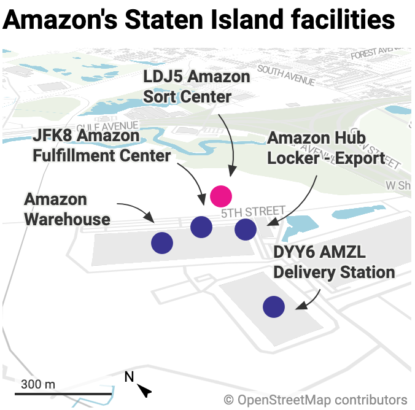

Amazon Labor Union stumbles as workers vote down union at second NYC facility
The results of last week’s election are in
By Mitchell Clark May 2, 2022, 2:35pm EDT
The election for the facility was held last week. Illustration by Alex Castro / The Verge
Amazon workers at the LDJ5 facility in Staten Island, New York, have voted against organizing with the Amazon Labor Union at a count of 618 nos to 380 yeses. The facility has around 1,600 workers in total, and began its election last week.
It’s been a long road to the election at LDJ5. In October, 2021, the ALU petitioned the National Labor Relations Board (or NLRB) to hold an election at four Staten Island facilities, including the sorting center. However, to make sure it had a sufficient showing of interest, the union refiled its petition to only include the JFK8 facility. In February, the ALU filed a new petition to hold an election for LDJ5, which was approved in March. The ALU pulled off a historic victory the next month, when workers at the JFK8 facility voted 2,654 to 2,131 in favor of unionization.
The fight to unionize LDJ5 will likely not end here. At another Amazon facility in Bessemer, Alabama, the Retail, Wholesale and Department Store Union successfully lobbied the NLRB (which oversees the votes) to hold another election, alleging that Amazon had interfered. While the votes tallied in the redo signaled a loss for the union, a high number of contested ballots means that nothing is final yet. The RWDSU has already submitted a complaint accusing Amazon of interfering in the second Bessemer vote.
The ALU tweeted after the count finished that it will continue organizing “at this facility and beyond.” It does still have to negotiate a contract with Amazon for the workers at JFK8, as long as the results of the election aren’t reversed. That process could take months, and will likely require support from the facility’s workforce.
The ALU “will certainly contest the election,” according to a statement from the group’s lawyer given to Vice. He continued to say that Amazon “violated laboratory conditions in this election with mandatory anti-union meetings,” a practice which the NLRB has been seeking to end.
Developing...